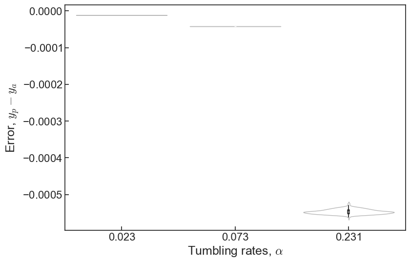

Week 16
Tasks
Summary
Tracking progress systematically
We made a spreadsheet table to log and track different changes, and start anew, as last week we only designed basic experiments to see what we can potentially do.
Metrics
To evaluate the models, we established some metrics and threshold:
- Mean absolute error
- \(MAE < 0.01\)
- Standard deviation (minimum, maxmimum and average of all \(\alpha\)’s)
- \(\sigma_{max} < 0.02\)
- \(\sigma_{mean} < 0.01\)
- Overlap ratio within \(10^{-4}\) (whether the prediction ranges cover the actual value)
- \(O = 1\)
- Pearson’s \(r\) (this is only affective on a handful of \(\alpha\)’s, using it on one or two data points is not very indicative of the model’s performance)
- \(r > 0.975\)
Previous progress and old strategy
From last week, model B was okay. It didn’t improve after 10 epochs. This prompted us to tweak it slightly. Here were the different attempts:
- Instead of training on one \(\phi\), train on similar values to add to it more data
- Generally lower spread but not much difference. Still failing to descend after 10 or 15 epochs.
- Increasing the number of filters and kernel size in the convolutional layer
- No improvement, if not slightly worse, slow training times as there are now many more parameters. Still not descending after 10 epochs or so.
- Use LeakyReLU (ReLU but with small gradient when unit is inactive, apparently works well on regression)
- LeakyReLU seems to be worse. We stick to ReLU for now.
- Apply a separate
ReLU()layer afterConv2D()(which now has no activation). ApplyMaxPooling2D()in between to reduce parameters.- This helps training speed but doesn’t improve nor degrade performance. For simple model we don’t need to use pooling so we can apply it when we declare the
Conv2Dlayer.
- This helps training speed but doesn’t improve nor degrade performance. For simple model we don’t need to use pooling so we can apply it when we declare the
- Adding more dense layers with non-linear activation.
- Significantly more parameters, reduce training speed, no improvement
# Before
model.add(
Conv2D(
filters=3,
kernel_size=(3, 3),
padding="same",
activation="relu",
input_shape=shape,
)
)
model.add(BatchNormalization())
# After
model.add(Conv2D(filters=3, kernel_size=(3, 3), padding="same", input_shape=shape))
model.add(MaxPooling2D(pool_size=(2, 2), padding="same"))
model.add(ReLU())
model.add(BatchNormalization())Dead end?
Overall, even with minor tweaks, the performance is just okay, there is a lot of spread still, all of the attempts effectively looks like this:
Code
def extract_floats(string):
return re.findall(r"[-+]?\d*\.\d+|\d+", string)
def data_load(alphas,densities):
files = []
for alp in alphas:
for val in densities:
files += glob.glob(f"no_roll_data/dataset_tumble_{alp:.3f}_{val}.h5")
inputs,outputs = [],[]
for f in files:
tumble = float(extract_floats(f)[0])
with h5py.File(f, "r") as fin:
count = 0
for key in fin.keys():
img = fin[key][:]
img[img > 0] = 1
img = img.reshape((img.shape[0], img.shape[1],1))
shape = img.shape
inputs.append(img)
outputs.append(tumble)
count+=1
# Scramble the dataset
order = np.arange(len(outputs)).astype(int)
order = np.random.permutation(order)
return np.array(inputs)[order],np.array(outputs)[order],shape
def plot(y_val,prediction):
from cmcrameri import cm
bins = np.logspace(-6,-1,10, base=2)*0.85
v = prediction.T[0]
colors = cm.batlowS(np.digitize(v, bins))
colors_actual = cm.batlowS(np.digitize(np.unique(y_val),bins))
fig, ax = plt.subplots()
ax.scatter(y_val, v, c=colors, alpha=0.25)
ax.scatter(np.unique(y_val), np.unique(y_val), marker="_", color='k', s=200)
ax.set_xscale("log")
ax.get_xaxis().set_major_formatter(ticker.ScalarFormatter())
ax.set_xticks(np.unique(y_val))
ax.set_facecolor([0.98,0.98,0.98,1])
for val in bins:
ax.axvline(val, alpha=0.05, c='k')
ax.set_xlabel("Input turning rate")
ax.set_ylabel("Predicted turning rate")
std = []
overlap = []
accuracy = 1e-4
for val in np.unique(y_val):
v_mapped = v[np.where(y_val == val)]
std.append(np.std(v_mapped))
overlap.append((val + accuracy >= np.min(v_mapped)) & (val - accuracy <= np.max(v_mapped)))
print("Overlap ratio:", np.sum(overlap)/len(overlap))
print("(Min, Max, Avg) STD:", np.min(std), np.max(std), np.mean(std))
print("Pearson's correlation coeff: ", pearsonr(y_val, v).statistic)
def split_dataset(x,y,last=2000):
print("Number of unique alpha: ", len(np.unique(y)))
print("Shape of x: ", np.shape(x))
print("Shape of y: ", np.shape(y))
x_train, y_train = x[:-last], y[:-last]
x_val,y_val = x[-last:],y[-last:]
print("Size of training data: ", len(x_train))
print("Size of validation data: ", len(x_val))
return x_train, y_train, x_val, y_val
def plot(y_val,prediction):
from cmcrameri import cm
bins = np.logspace(-6,-1,10, base=2)*0.85
v = prediction.T[0]
colors = cm.batlowS(np.digitize(v, bins))
colors_actual = cm.batlowS(np.digitize(np.unique(y_val),bins))
fig, ax = plt.subplots()
ax.scatter(y_val, v, c=colors, alpha=0.25)
ax.scatter(np.unique(y_val), np.unique(y_val), marker="_", color='k', s=200)
ax.set_xscale("log")
ax.get_xaxis().set_major_formatter(ticker.ScalarFormatter())
ax.set_xticks(np.unique(y_val))
ax.set_facecolor([0.98,0.98,0.98,1])
for val in bins:
ax.axvline(val, alpha=0.05, c='k')
ax.set_xlabel("Input turning rate")
ax.set_ylabel("Predicted turning rate")
std = []
overlap = []
accuracy = 1e-4
for val in np.unique(y_val):
v_mapped = v[np.where(y_val == val)]
std.append(np.std(v_mapped))
overlap.append((val + accuracy >= np.min(v_mapped)) & (val - accuracy <= np.max(v_mapped)))
print("Overlap ratio:", np.sum(overlap)/len(overlap))
print("(Min, Max, Avg) STD:", np.min(std), np.max(std), np.mean(std))
print("Pearson's correlation coeff: ", pearsonr(y_val, v).statistic)Code
x,y,shape = data_load(
alphas=[0.016,0.023,0.034,0.050,0.073,0.107,0.157,0.231,0.340,0.500],
densities=[0.25]
)
x_train, y_train, x_val, y_val = split_dataset(x,y,last=int(len(x)*0.2))
name = "rock8943"
model = tf.keras.models.load_model(f'models/{name}.keras')
model.summary()
prediction = model.predict(x_val)
plot(y_val,prediction)Number of unique alpha: 10
Shape of x: (10000, 128, 128, 1)
Shape of y: (10000,)
Size of training data: 8000
Size of validation data: 2000
Model: "sequential_1"
_________________________________________________________________
Layer (type) Output Shape Param #
=================================================================
conv2d_3 (Conv2D) (None, 128, 128, 3) 30
max_pooling2d_3 (MaxPooling (None, 64, 64, 3) 0
2D)
re_lu_3 (ReLU) (None, 64, 64, 3) 0
batch_normalization_3 (Batc (None, 64, 64, 3) 12
hNormalization)
conv2d_4 (Conv2D) (None, 64, 64, 4) 196
max_pooling2d_4 (MaxPooling (None, 32, 32, 4) 0
2D)
re_lu_4 (ReLU) (None, 32, 32, 4) 0
batch_normalization_4 (Batc (None, 32, 32, 4) 16
hNormalization)
conv2d_5 (Conv2D) (None, 32, 32, 9) 909
max_pooling2d_5 (MaxPooling (None, 16, 16, 9) 0
2D)
re_lu_5 (ReLU) (None, 16, 16, 9) 0
batch_normalization_5 (Batc (None, 16, 16, 9) 36
hNormalization)
global_average_pooling2d_1 (None, 9) 0
(GlobalAveragePooling2D)
dropout_2 (Dropout) (None, 9) 0
dense_3 (Dense) (None, 128) 1280
dropout_3 (Dropout) (None, 128) 0
dense_4 (Dense) (None, 3) 387
flatten_1 (Flatten) (None, 3) 0
dense_5 (Dense) (None, 1) 4
=================================================================
Total params: 2,870
Trainable params: 2,838
Non-trainable params: 32
_________________________________________________________________
1/63 [..............................] - ETA: 5s27/63 [===========>..................] - ETA: 0s52/63 [=======================>......] - ETA: 0s63/63 [==============================] - 0s 2ms/step
Overlap ratio: 0.9
(Min, Max, Avg) STD: 0.00214659 0.034032185 0.0127004115
Pearson's correlation coeff: 0.9893322916789618
Overfitting one data point to tune learning rate
Code
Number of unique alpha: 1
Shape of x: (1000, 128, 128, 1)
Shape of y: (1000,)
Size of training data: 800
Size of validation data: 200
Model: "sequential"
_________________________________________________________________
Layer (type) Output Shape Param #
=================================================================
conv2d (Conv2D) (None, 128, 128, 3) 30
batch_normalization (BatchN (None, 128, 128, 3) 12
ormalization)
dense (Dense) (None, 128, 128, 3) 12
flatten (Flatten) (None, 49152) 0
dense_1 (Dense) (None, 1) 49153
=================================================================
Total params: 49,207
Trainable params: 49,201
Non-trainable params: 6
_________________________________________________________________
1/7 [===>..........................] - ETA: 0s7/7 [==============================] - 0s 2ms/step
Overlap ratio: 1.0
(Min, Max, Avg) STD: 5.174399e-05 5.174399e-05 5.174399e-05
Pearson's correlation coeff: nan/tmp/ipykernel_89121/2675970344.py:118: ConstantInputWarning: An input array is constant; the correlation coefficient is not defined.
print("Pearson's correlation coeff: ", pearsonr(y_val, v).statistic)
Overfitting two data points to tune learning rate
This one uses SGD with learning rate (0.0003) and took 180 epochs before it stops descending
Code
Number of unique alpha: 2
Shape of x: (2000, 128, 128, 1)
Shape of y: (2000,)
Size of training data: 1600
Size of validation data: 400
Model: "sequential"
_________________________________________________________________
Layer (type) Output Shape Param #
=================================================================
conv2d (Conv2D) (None, 128, 128, 3) 30
batch_normalization (BatchN (None, 128, 128, 3) 12
ormalization)
conv2d_1 (Conv2D) (None, 128, 128, 3) 84
batch_normalization_1 (Batc (None, 128, 128, 3) 12
hNormalization)
max_pooling2d (MaxPooling2D (None, 64, 64, 3) 0
)
dense (Dense) (None, 64, 64, 3) 12
flatten (Flatten) (None, 12288) 0
dense_1 (Dense) (None, 1) 12289
=================================================================
Total params: 12,439
Trainable params: 12,427
Non-trainable params: 12
_________________________________________________________________
1/13 [=>............................] - ETA: 1s13/13 [==============================] - ETA: 0s13/13 [==============================] - 0s 10ms/step
Overlap ratio: 1.0
(Min, Max, Avg) STD: 0.007312789 0.0073565524 0.007334671
Pearson's correlation coeff: -0.03504739682166748